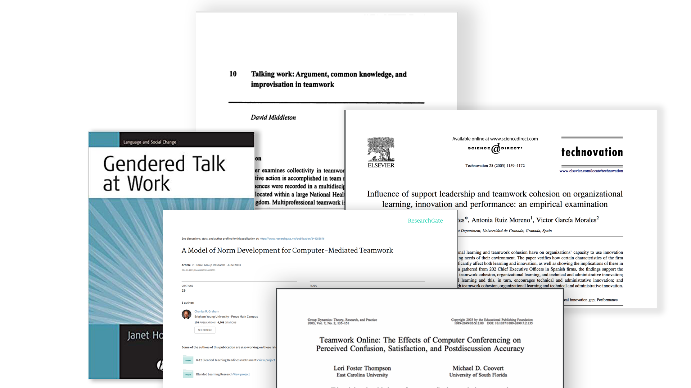
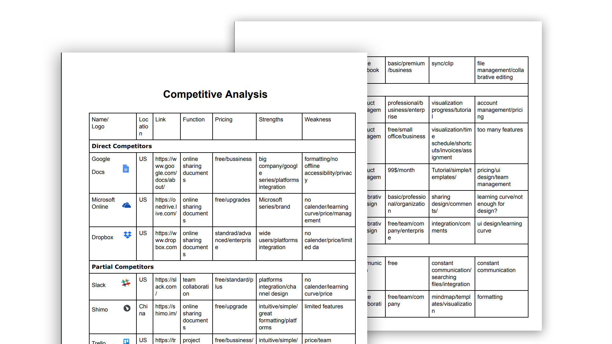

Overview
VOCO is a digital mobile application aiming to improve decision making process for small student teams.
Its goal is to create an inclusive and a supportive collaborative environment which empowers all members in the group decision making process.
By allowing group members expressing their ideas and granting them equal oppurtunities to choose , VOCO facilitates the decision-making process and motivates the team participation.
Problem Statement
How might we improve the group work experience for small student teams?
Diverse personalities and dissimilar working norms may lead to the storm in the team work.
Extroverts and introverts convey their ideas in different ways. Sometimes introvers may be hidden in the discussion.
Meanwhile, coming from diverse backgrounds, we all have different working norms.
While some people tend to use slack, others might stick to whatapp. When some people enjoy meeting in person, some prefer meeting in virtual space. In this case, we need to communicate with each other about their preference and make decision between options.
So, how can we embrace differences and ensure collaboration within a group?
Research Phases
I approached this problem from three perspectives.
- I reviewed the previous research on the topic of groupwork, investigating the preceding theories related to collaboration.
- I conducted a comparative analysis on the current market, examining the niche of the teamworl solutions.
- I interviewed five students about their groupwork experience, and gained insights from the analysis.
Literature Review
- Discourse Analysis: Members communicate in various ways depensing on their roles, social identity and group dynamics.
- Computer Mediated Communication: digital tools have a remarkable impact on teamwork progress and satisfaction by influencing norm establishments and communication accuracy.
- Leadership: The level of cohesion and innovation are affected by the dynamics of leadership in the group.
Comparative Analysis
The extensive digital applications for teamwork can be categorized to four groups.
- group chat applications
- collaborative editor
- shared drive
- program management
Under each main categories, there are even more applications targeting at different users. Since collaborative tools market is extremely mature, the challenge would be to disvocer the gap.
However, there are also opportunities for this market. Since many products are either expensive, burdensome or confusing, there is a need to find a balance between simplicity and functionality.
Interviews
My five interviewees shared with me their groupwork experiences.
By adopting the method of contextual inquiry, I summarized three insights from the interviews.

- A shared goal and a strong leadership boost group productivity.
- Group communication determines project progress and team dynamics.
- Using differnet digital tools leads to scattered workplace which complicates the team handover and updates.
At this point, I discovered there are three main elements that affect the performance of teamwork, which is leadership, communication and tool integration.
Refering to my research, I wanted to tackle the teamwork experinces by integrating communication, file storage and task management in one place to centralize the teamwork. Therefore, the first prototype I made is generally the integration of google drive, trello and whatsapp, as a solution to tackle the three problems above respectively.


- team leadership --------> task assignment and management
- team communication --------> embedded instant massege
- scattered workspace --------> cetralized file drive
User testing
User testing helped me discovered several key issues:
- It takes too many clicks to accomplish one goal.
- For some users, it is confusing to identify and navigate the applications
- Some users suggests that this application will take a long time to adjust to.
Narrowing Down the Focus
The characteristic of student team explain why my first prototype did not answers users' needs.
First of all, a student team do not have a designated leader.
We take on task and work by interest and strengths.
Unlike professional workforce, a student team does not have a program manager or boss who assigns group work and push the process.
Also, we tend to maintain a harmonious peer relationship while working with classmates.
We spend time waiting for a response or an agreement to make sure everyone is satisfied.
Similarly, we have different time schedule and diverse personalities and work habits
Therefore, it is not easy for students to share ideas and make decisions.
As a result, we waste time on waiting and deciding, but not spending enough time on communicating and working.
VOCO 2.0
So, how might we design an effective decision making tool for student teams?
VOCO 2.0 aims to assist student teams to make decisions and achieve agreements. Accordingly, everyone can engage in the decision making process. Most importantly, the ultimate goal is to share opinions and understanding.
Key Feature 1 Share Questions and Vote for Answers
"I wonder what my team members think about this problem?"
It isn't easy to get instant feedback if we work remotely or raise your opinions during the meeting. By sharing your questions on VOCO, you will get support no matter when and where you are. Meanwhile, you can respond to group questions to engage in the decision-making process.
Key Feature 2 Store Your Groups Decisions
"The meeting start at 5?"
Trivial decisions are easily neglected but essential.Memories feature stores all your group decisions so you can always find answers here.
Key Feature 3 Statistical Report
"How's my team progress?"
It's always crucial to keep implementing your group productivity. Statistical report analyzes the activity and the trend and you can improve your team work accordingly.
Takeaway
- Narrowing dowon the focus in an early stage of design. VOCO 1.0 attempts to intergrate all key feaures yet it does not hit the painpoints. This resulte from I have not narrowed down my focus in an earlier research phase. Thus, I need to scrutinze my problem statement again to find the focus of this topic.
- Design research is not a linear process. As I stated above, there are times that is essential for designers to go back and start again. It might be difficult to analyze your thought process, but it will be an eureka moment when you sincerely focus on the problem and empathize with the users.
- Care about the problems no matter how big or small the market is. Inclusiveness is and will always be my principle for design. During interview, most users think that their problems might be trivial and not worthy of research. However, they actually share many problems together, and these painpoints can be applied to a larger crowd. Therefore, I do believe that designers should not only design for the market but truly design for people.